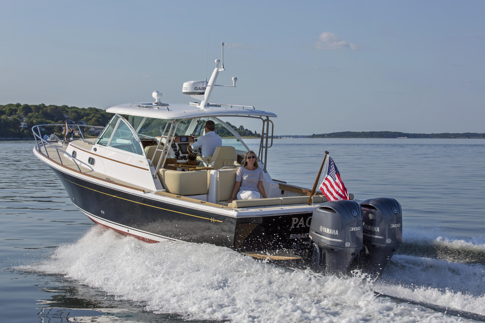

B-Scout Boat Guide · HUNT-29
Hunt Yachts Surfhunter 29 Deep-V Express Cruiser
2004–2026
The Hunt Surfhunter 29 is a performance-oriented Downeast cruiser based on C. Raymond Hunt deep-V design heritage. It combines a protected helm/coupe concept with higher-speed coastal capability and refined recreational accommodations.

- Length
- 29.33 ft
- Beam
- 10.5 ft
- Draft
- 3 ft
- Hull behaviour
- Planing
- Fuel
- Gasoline
- Propulsion
- Shaft
- Engine configuration
- Single diesel or gasoline package depending configuration
- Boat family
- Downeast
- Construction
- Fiberglass
Best for
- Buyers prioritizing rough-water ride and speed
- Couples wanting a refined Downeast day/weekend cruiser
- Owners comfortable with performance-boat operating costs
Trade-offs
- Higher cruising speed brings materially greater fuel use than displacement trawlers
- Deep-V hull and performance machinery add complexity and draft compared with simple lobster-hull cruisers
- Interior volume is moderate for overall length
Known concerns
- No model-specific concern has been promoted to B-Scout’s evidence threshold. This does not mean the model has no age-, condition- or hull-specific risks.
Inspection focus
- Inspect hull/deck laminate and hardware penetrations
- Review engine, pod/shaft, exhaust and cooling service records
- Inspect trim tabs, steering, thrusters and electronic controls
- Verify machinery package and performance configuration
- Inspect glazing, hatches and deck drainage
Continue researching
Related boat models
Hunt Yachts Surfhunter 36 Coupe Coupe
36.5 ft · Planing
Back Cove 29 Downeast Cruiser
29.5 ft · Semi-Displacement
Duffy 29 Downeast Hull
29 ft · Semi-Displacement
Albin 28 Tournament Express Engine Box
29.92 ft · Planing
Albin 28 Tournament Express Flush Deck
29.92 ft · Planing
Luhrs 30 Alura Downeast-Profile Fishing Cruiser
30 ft · Semi-Displacement
About this record
B-Scout preserves uncertainty: missing information remains unknown rather than being treated as a negative. Specifications and guidance describe the model record; individual boats can differ by year, equipment, refit and condition.